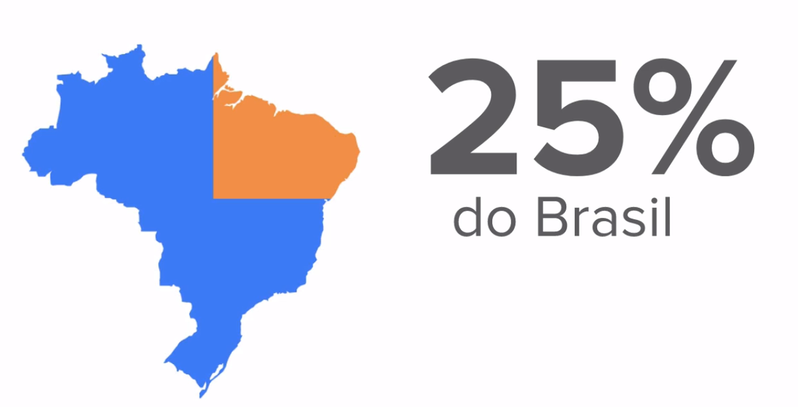

Cerca de 25% da população brasileira possui algum tipo de deficiência física ou cognitiva. Trata-se de uma porcentagem significativa e, por isso, devemos levá-la em consideração.
Esse valor representa aproximadamente 45 milhões de pessoas, são muitas pessoas que muitas vezes são desconsideradas quando projetamos as nossas interfaces tanto para web sites quanto para aplicações.
Precisamos levá-las em consideração tanto na criação do layout como no momento de elaborar o código, somente dessa forma podemos cumprir nossa missão de produzir e democratizar o conhecimento para todos.

No desenvolvimento desse site, foram levadas em consideração cinco deficiências (transtornos, síndromes ou particularidades):
Autismo Surdez Dislexia Baixa visão Deficiência física
Autismo
Para garantir a acessibilidade do público foi considerada como base a cartilha especificada pelo governo federal do Brasil, juntamente com a Microsoft: Tecnologia Assistiva nas escolas.
Amenizamos o uso de cores muito fortes, que podem atrapalhar a experiência de usuários autistas - também pensando que pode ser uma escolha desagradável para outros usuários, seguindo as dicas do appy Autism.
A simetria da página também foi algo com grande foco, muitos neurodiversos prezam por padronização e gostam de antecipar as ações, ou seja, a falta de simetria de uma página pode tirar o foco e causar desconforto impedindo que a comunicação seja realizada de forma eficiente. Além do fácil entendimento de linguagem para que possamos transmitir o conhecimento, temos de fazer tudo que estiver a nosso alcance para que o usuário possa absorver esse conhecimento e para isso nossa pagina foi pensada cuidadosamente.
surdos
Fatores como a capacidade auditiva, reduzida ou não, ou se o indivíduo foi oralizado, são características diferenciais. A língua brasileira de sinais, libras, é o primeiro idioma dessas pessoas.Isso quer dizer que apesar de muitos surdos serem letrados, muito conhecimento é perdido no momento da interpretação. Esse ponto faz com que o entendimento possa ser dificultado durante uma conversação, ou nesse caso, durante uma leitura e aprendizado em uma página da internet.
Para isso garantir a inclusão em nossa página, além de tentar ao máximo evitar textos longos e desnecessários, também incluímos em nosso código um tradutor para Língua Brasileira de Sinais, facilitando assim o entendimento e aprendizado o máximo possível para todos. Comunicação visual também foi o foco de nossa equipe, cada informação contém uma imagem que a representa bem, tanto ícones de redes sociais quanto na descrição dos processos científicos e sociais que a equipe teve de superar para chegar até aqui.
dislexia
Esse público possui uma atenção especial na leitura. Para compreender melhor, deixamos aqui o simulador de dislexia, para que o fenômeno seja melhor compreendido.
Para que a interpreação dos textos não seja comprometida evitamos deixar “caminhos vazios” nos textos. Bem como, centraliza-los no meio, o texto está smepre alinhado a esquerda, para facilitar a orientação da leitura do usuario.Outra dificuldade identificada entre os disléxicos é a dificuldade de armazenar dados de curto prazo enquanto está lendo, por isso todas as informações tem suas referencias e conclusoes abordadas rapidamente, smepre na mesma tela a que o usuario se encontra, os sublinhados indicativos de hipertextos tambem foram revmotidos e substituidos por cores chamativas com iconices infromando serem clicaveis ao lado. Uma barra de oruentação do lado esquerdo tambem foi criado para que os topicos de interesse sejam encontrados com facilidade.
baixa visão
para esse publico tivemos muito cuidado com o contraste das letras com o fundo da pagina e as imagens apresentadas, usando a ferramenta Leaverou
. o tamanho e a escolha de fontes também foi levada em consideração.
deficiente fisico
muitas pessoas podem ter difcildades para acessar a parte da pagina de interesse, problemas com digitação ou orientação do cursor do mouse podem excluir esse publico do acesso a infromação digital. Pensando nisso a google dispolibilizou diretrizer de boas praticas a se seguir em um codigo para facilitar oo maximo o acesso, que envolve desde tamanho minimo de icones ate distancias. Alem disso a google vem desenvolvendo uma aplicação chamada "Voice Access" que permite acessar qualquer aplicativo apenas com o uso da voz, vale ressaltar que nossa pagina é compativel com as inciativas já idsponiveis no mescado como Google Assistant, disponível para os dispositivos Android e a Siri da Apple. Aqui recomendamos um video que demonstra os beneficios do voice access um vídeo